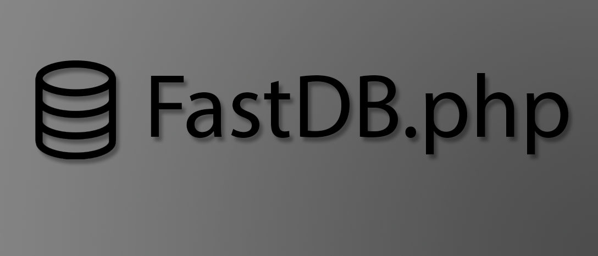

пиксели и логика,
созданная в монохроме
Создам уникальный веб-дизайн и логику для вашего проекта!
Специализируюсь на
Практикую
контакты
демонстрация
Демонстрационный сайт будет рассматриваться как система заказа пиццы
Это не просто лендинг для пиццерии, а полноценное имитационное веб-приложение, созданное для демонстрации моих навыков в разработке сложных интерфейсов.
Проект собран из базового набора (PHP + база данных) и имеет следующие функции:
* Данный проект создан исключительно для демонстрации моих навыков разработки веб-интерфейсов и клиент-серверного взаимодействия. Реальные заказы не выполняются.
проекты

FastDB
Быстрая база данных написанная на PHP.

Local FS
Маленькая библиотека локальной файловой системы в оперативной памяти для переменных.

Colored Console
Библиотека для цветного вывода в Chrome DevTools Console.
Все проекты можно найти на https://github.com/hxntxfr.
описание
Каждый проект я рассматриваю как систему — от разработки визуальных образов до backend-логики. Это портфолио отражает философию «чёрного и белого»: убирать лишнее, усиливать главное.